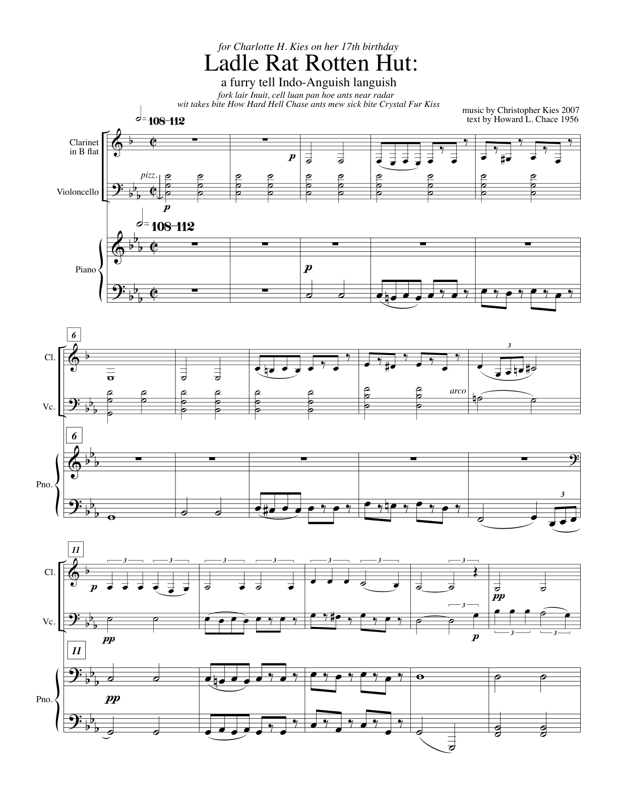

Now available
Beatles arrangements
With a Little Help from My Friends, Piano Four-hands category entry
Explore over 20 new song arrangements.
Available on Sheet Music Plus, Beatles arrangements by Christopher Kies.
Recordings
Albums
Music by Christopher Kies with Poems and Stories, album entry
Chamber music for narrator with varied combinations of brass, woodwinds, and piano alongside ragtime works for solo piano.
Featured
Little Red Riding Hood (or Ladle Rat Rotten Hut) for Clarinet in B Flat, Cello, Piano, and Narrator No. 026, catalogue entry

I composed the music to this story as a present for my daughter, Charlotte, on her seventeenth birthday in April of 2007. Read the program note for Little Red Riding Hood (or Ladle Rat Rotten Hut) for Clarinet in B Flat, Cello, Piano, and Narrator
Biography
About the Composer
Christopher Kies is a composer and Professor Emeritus at the University of New Hampshire. Read about Christopher Kies